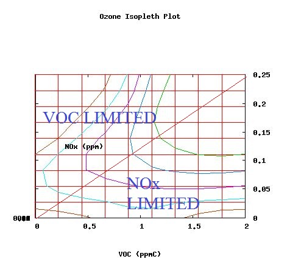

It's time to now go into some real stuff with air pollution. And what better way to start it off other than smog? You will see an image with a rather lot of stuff going on. You may run away by fear of it. The picture is very terrible for many reasons. One, there's way too much stuff going on. Two, it has some stuff that's simply not good for you in moderate amounts. Three, I need to repeat that there's way too much stuff going on again. But all this is important, so let's carefully analyze what in the world is going on.
Let's go through this step by step.
(1) The OH (hydroxyl) radical is a critical piece of this whole cycle. So we will start with analyzing this chemical first. OH can come from a "photolysis" reaction, or a light-induced reaction of HONO (nitrous acid), which forms OH and NO (nitric oxide). Another source of OH is ozone undergoing reactions which involve light and water. OH can leave the environment by reacting with NO2 (nitrogen dioxide) to form HNO3 (nitric acid). In summary,
(2) Cars emit molecules called hydrocarbons. Some people might call them HCs, but here we will denote them in the organic chemistry-style language: RH. Hydrocarbons are composed of carbon and hydrogen. When the car emits a hydrocarbon, an OH can come and "steal" (realistically, it reacts in a complex fashion) a hydrogen (H) from RH. Now what we have is a hydrocarbon missing one of its hydrogens (called R), and the OH which took the H now becomes H2O. The overall reaction is OH + RH --> H2O + R.
(3) R can the react with molecular oxygen to form an alkylperoxy radical. This is the R we had, but with two oxygens stuck on it: R + O2 --> RO2.
(4) That RO2 can now react with nitric oxide (NO) to form RO, called an alkoxy radical. The nitric oxide "steals" an oxygen from RO2. So now the products are RO and NO2; what happened was an oxygen atom transfer. Note that the newly formed nitrogen dixoide can undergo light (photolysis) reactions and revert back to nitric oxide. In summary,
(5) Now the RO - that alkoxy radical - can react with molecular oxygen to form RCHO and the hydroperoxyl radical (HO2). The detailed process on how this works is a little complicated, but just know the main reaction:
(6 & 7) It then, seems that the newly formed hydroperoxyl radical (HO2) can undergo two paths: react with nitric oxide (NO) in the air to form another OH radical, or react with one of its own fellow hydroperoxyl brothers (another HO2) to form hydrogen peroxide (H2O2) and molecular oxygen. In other words,
(8) What part 8 is basically saying is that nitric oxide can react with ozone to form nitrogen dioxide and molecular oxygen: NO + O3 --> NO2 + O2.
(9) If you analyze part 9, you can see that the oxygen from nitrogen monoxide breaks from the molecule, and reactions with a regular oxygen molecule to form ozone. All this stuff is going on, yet this is the major source of tropospheric ozone, or the stuff that's bad for you...
Let's stop for a moment. It would be useful to know where sources of certain things come from. We can start with our hydrocarbons (RHs). These are part of a class of compounds known as volatile organic compounds -in short, VOCs. Another term that is good to know is NOx. All NOx stands for is nitric oxide and nitrogen dixoide as a collective group. Now, hydrocarbons and other VOCs are usually released by transporation vehicles or industries. This is likewise with NOx. While all this is happening, ozone is split by light, and secondary reactions provide OH radicals. Let's practice this cycle with methane, CH4.
(compare to step 1 from the previous section) We have some reactions with our starting ingredients, and molecular oxygen is floating around in the air:
(compare to step 2 from the previous section) The car spews out a hydrocarbon. The chain reaction begins.
OH + CH4 --> H2O + CH3.
(compare to step 3 from the previous section) The CH3 from the last reaction reacts with oxygen: CH3 + O2 --> CH3O2.
(compare to step 4 from the previous section) The CH3O2 reacts with nitric oxide and loses an oxygen atom. Don't forget that the newly formed nitrogen dioxde can undergo photolysis as well.
(compare to step 5 from the previous section) Now we form our hydroperoxyl radical.
Compare to steps 6 & 7 from the previous section.
Compare to step 8 from the previous section. The same, as expected. NO + O3 --> NO2 + O2.
Compare to step 9.
If we go back to step 8, there is actually an interesting way to come up with a formula for calculating the the concentration of ozone. Scientists have discovered rate laws (see prerequisites) for the reactions in step 8, and by doing this, they actually could estimate the concentration of ozone in the troposphere. Let's recall what is going on in step 8:
NO + O3 --> NO2 + O2 $(A)$.
While this is happening, keep in mind that NO2 reacts with light.
NO2 + light --> NO $(B)$.
Scientists have discovered the rate law for $(B)$ is the following:
$Rate = k_{NO + O_{3}}[NO][O_{3}]$
And the rate law for (B) (note: the J-NO2 thing you see in this equation is simply a rate constant):
$Rate = J_{NO_{2}}[NO_{2}]$
A useful assumption is to let reactions A and B be under steady-state conditions. What does this mean? It means that the rate of nitrogen dioxide being produced (by A) is the same as the rate of nitrogen dioxide being terminated (by B). We can then set the rate laws of A and B equal to each other.
$Rate\:A = Rate\:B$
$k_{NO + O_{3}}[NO][O_{3}] = J_{NO_{2}}[NO_{2}]$
Isolate ozone using your algebra skills on one side of the equation:
$[O_{3}] = \frac{J_{NO_{2}}[NO_{2}]}{k_{NO + O_{3}}[NO]}$ (!!)
Now it turns out, this is a pretty good approximation for concentration of ozone in the troposphere. Not exact, but turns out to be pretty decent. It is critical that the steady state assumption be valid in order for this to work. The rate constant values are given in the next example.
EXAMPLE:
The concentration of nitric oxide measured at a certain hour in the morning reads 0.25 parts per million (ppm), while the concentration of nitrogen dioxide is 0.10 ppm. JNO2 is 9.3 x 10-3/s, and knitric oxide + ozone is 1.8 x 10-14 cm3/molecule s. Find the approximate concentration of ozone.
Just plug in the values to where they belong:
$[O_{3}] = \frac{J_{NO_{2}}[NO_{2}]}{k_{NO + O_{3}}[NO]}$
$[O_{3}] = \frac{\left(\frac{9.3\cdot10^{-3}}{1\:s}\right)[0.10\:ppm]}{\left(\frac{1.8\cdot10^{-14} cm^{3}}{molecule\cdot s}\right)[0.25 \:ppm]}$
$[O_{3}] = 2\cdot 10^{11}\:molecules/cm^{3}$ at this time.
We already saw how in the picture at the top of the page, there were reactions "hidden" inside the dotted purple box. Reality is complex - so much more action happens, such as certain trees emitting compounds such as isoprene which intereferes with tropospheric chemistry. We will discuss two major chemicals of interest that can significantly contribute to the tropospheric reaction cycle.
A good one to know is formaldehyde. Having the formula HCHO, it undergoes photolysis to generate H and HCO. The H atom can the react with an oxygen molecule and a mediator to form HO2. The HCO also can react with an oxygen molecule to form HO2 and carbon monoxide (CO). In summary,
Notice something interesting? This generates HO2! If you go back to the picture at the top, you'll see that HO2 is a significant player in tropospheric chemistry, and can further increase OH radicals.
Now, carbon monoxide is also an important player. It can generate hydroperoxy radicals by the reactions:
Again, this also contributes to tropospheric air pollution.
It is now time for us to start learning about ozone isopleths. An example of one is in the image below:

Let's explain what's going on here. At any time of the day, an isopleth can be generated. The isopleth has a bunch of lines all over the place, but for now, concentrate on the vertical and horizontal axis. The vertical axis shows the concentration of NOx (that is, the combination of nitric oxide and nitrogen dioxide) and the horizontal axis shows the concentration of VOCs (volatile organic compounds). The RHs you learned earlier are part of the VOC group.
Now we must pay atttention to the weird curvy lines. These lines are called countour lines. These lines represent lines of constant ozone concentrations. For instance, everywhere on the brown line near the lower left corner represents 0.08 ppm of ozone. Everywhere on the cyan line represent 0.10 ppm of ozone. Everywhere on the purple line represents 0.12 ppm of ozone. Everywhere on the the turqouise line represents 0.14 ppm of ozone. And the green line represents 0.16 ppm of ozone. But why do we need to use the isopleth?
We need it because it can be used as a tool for reducing pollutants. For instance, let us say the concentration we measure in the air of NOx is 0.1 ppm, and the concentration we measure of VOC is 1.5 ppm. We are on the green line. We want to reduce the ozone concentration, but the only way to reduce it is to "hop" to another one of the contour lines that have a lower number. We either have to shift left (reduce the VOC concentrations), shift down (reduce the NOx concentrations) or reduce both. The goal is to reach one of the ozone contour lines that is a lower value of the contour line that we are currently on.
It's not as easy as it seems, however. Let's say we have 0.25 ppm of NOx and 1 ppm of VOC. Plot that point. We are currently on the purple line. So let's say we want to reduce NOx. It should work - we're reducing pollutants, right?
No, not really. In fact, we can be making the situation worse by reducing this air pollution contributor!
It turns out, if we only reduce NOx from the point we plotted, we can actually run into the 0.14 ppm ozone contour line, a concentration higher than what we had before! This isn't good. Luckily, there's the other option of solely reducing VOCs. This works, and can get us to a lower level of ozone. Be careful when coming up with reduction stragies, and don't make the problem worse.

EXAMPLE
:The concentration of NOx measured reads 0.10 ppm. The concentration of VOCs is about 0.07 ppm. What should you do to reduce to lower ozone concentration?
You should reduce VOCs to the point it hits at least one contour line to the left of the 0.10 ppm line. Reducing only NOx could place the ozone at higher concentration (only moving down will hit the purple contour line which has a higher concentration of ozone). You could reduce both only when it is safe to do so (doesn't hit a higher concentration of ozone).
One last thing: people sometimes use the terms NOx-limited region and VOC-limited region to discuss parts of the isopleth. You can usually estimate where this is by drawing a diagonal line, splitting the isopleth into two triangles. The left shape is the VOC-limited, and the right shape is the NOx-limited.
NOx has an average lifetime of less than one day, and reacts with light/other compounds relatively fast. However, VOCs have an average lifetime of a few days. Guess which one will travel farther when they both escape from a plume? I leave that for you to explore. (This is not a trick question).
Final note: the RH from the picture on top of the page comes from cars - but more specifically, incomplete combustion of cars. If cars were to combust completely, then carbon dioxide and water should be released. But this does not happen, and so CO and RH are released instead, and as you have read, these contribute to air pollution. New technology, such as catalytic converters, though, can at least convert NOx from the exhaust to nitrogen and oxygen molecules instead. So helpful things to reduce air pollution would be to research ways for better catalytic convertors, advance technology for more electric or hybrid vehicles, and increase fuel efficiency. Of course, that's just the cars - there is other stuff we need to look out for - such as factories. Again, it is not economical (nor probably wise) to just stop all the cars and pollution at once. What ways can you think of which limit pollutants yet does little to hinder economical activity? (It's not an easy question).